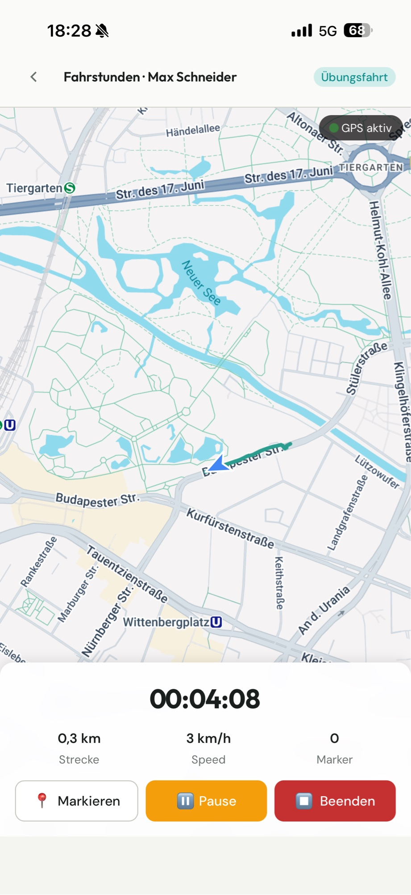
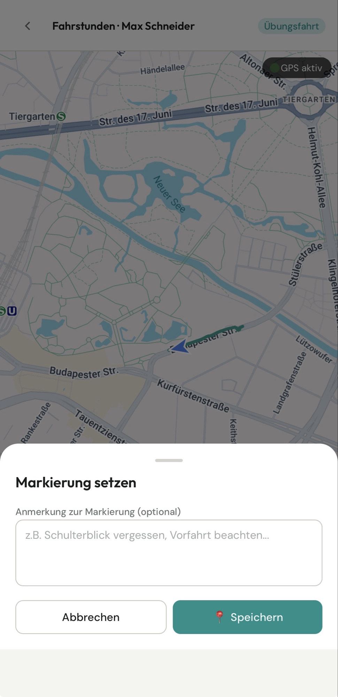

Planung & Termine anbieten
Schulen bieten freie 45- oder 90-Minuten-Slots aus dem Kalender an, Schüler buchen nach dem First-come-first-served-Prinzip.
FahrDoc zeichnet die gefahrene Route per GPS auf, lässt Fahrlehrer kritische Stellen direkt markieren und verknüpft jede Markierung mit Street View. So wird die Auswertung nach der Stunde konkret – Punkt für Punkt.
Für Fahrschulen, Fahrlehrer und Fahrschüler · Klassen B, A, A1, A2, AM

Sobald die Fahrstunde beginnt, läuft die GPS-Aufzeichnung. Die App zeigt live die gefahrene Strecke, Geschwindigkeit, Dauer und gesetzte Markierungen.

FahrDoc wertet die dokumentierten Stunden aus und zeigt das aktuelle Können je Kategorie – von Abbiegen über Spurwechsel bis zum Schulterblick. Vor der nächsten Fahrstunde lässt sich daraus automatisch ein Briefing erzeugen.
Schulen bieten freie 45- oder 90-Minuten-Slots aus dem Kalender an, Schüler buchen nach dem First-come-first-served-Prinzip.
Schulungsräume mit Sitzplätzen verwalten und die Theorie-Themen vom Grundstoff bis zum Zusatzstoff strukturieren.
Fahrzeuge der Fahrschule zentral anlegen und einzelnen Terminen zuordnen.
Übersicht über Fahrlehrer, Fahrschüler und neue Anmeldungen. Soll-Positionen drucken, exportieren oder abhaken.
Fahrschüler treten der Schule per individuellem Einladungs-Code bei.
Eine App für Fahrschule, Fahrlehrer und Fahrschüler – jede Rolle mit passender Ansicht.
Nach der Testphase wählst du den passenden Plan. Jederzeit im Fahrschul-Profil verwaltbar.
Noch Fragen? Schreib uns jederzeit an info@fahrdoc.app
29,99 €/ Monat
39,99 €/ Monat